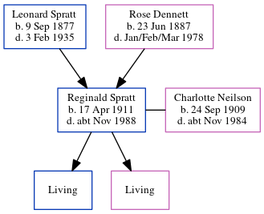

Charlotte MacKenzie Wilkins Spratt (née Neilson) 1909 - c1984
[ Home ] | [ Calendar ] | [ Surnames Index ] | [ Errors ] | [ Family History ]Charlotte Neilson, the wife of Reginald John Spratt (the first cousin once-removed on the father's side of Nigel Horne), was born in Scotland on 24 Sept 19091,2,3,4,5,6,7,8 and. She married Reginald (an aircraft filler assembly with whom she had 2 surviving children Robert E J and Joan F) in Thanet, Kent, England around Feb 193410.
During her life, she was living at 9 Bromley Gardens, Bromley, Kent on 2 Apr 191111; and at 93 Victoria Avenue, Margate, Kent on 29 Sept 19391.
She died c. Nov 1984 in Thanet2,9.
Citations
- 1939 Register - Findmypast (was recorded at this address)
- England & Wales deaths 1837-2007 - Findmypast
- The National Archives; Kew, London, England; 1939 Register; Reference: RG 101/1756A
- General Register Office; United Kingdom; Volume: 16; Page: 1741
- Class: RG14; Piece: 3641; Schedule Number: 290
- Class: RG14; Piece: 3641; Schedule Number: 290
- General Register Office; United Kingdom; Volume: 16; Page: 1741
- The National Archives; Kew, London, England; 1939 Register; Reference: RG 101/1756A
- General Register Office; United Kingdom; Volume: 16; Page: 1741 General Register Office; United Kingdom; Volume: 16; Page: 1741
- England & Wales Marriages 1837-2005 - Findmypast
- 1911 Census for England & Wales - Findmypast (was age 1 and the daughter of the head of the household)
Media
1939 Register Transcription - TNA-R39-1756-1756A-015-16
England & Wales deaths 1837-2007 - BMD/D/1984/11/74626684
1911 Census For England & Wales - GBC-1911-RG14-03641-0589-5
Family Trees - FMP/1543986537
Family Tree
Map
Generated by ged2site. Last updated on Jul 3, 2024
Known Issues
No records of living with anyone